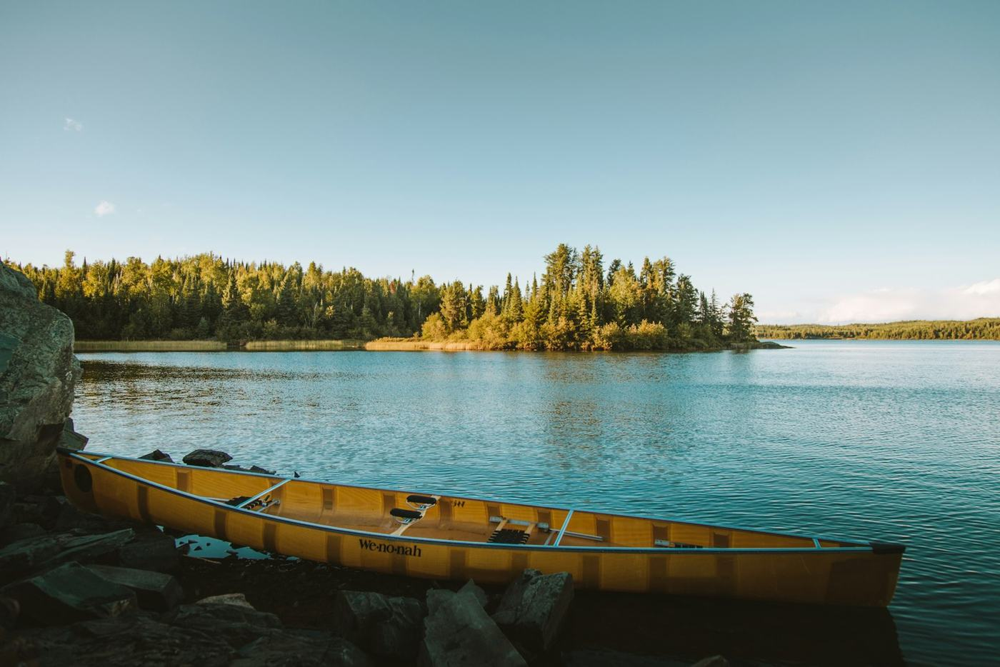
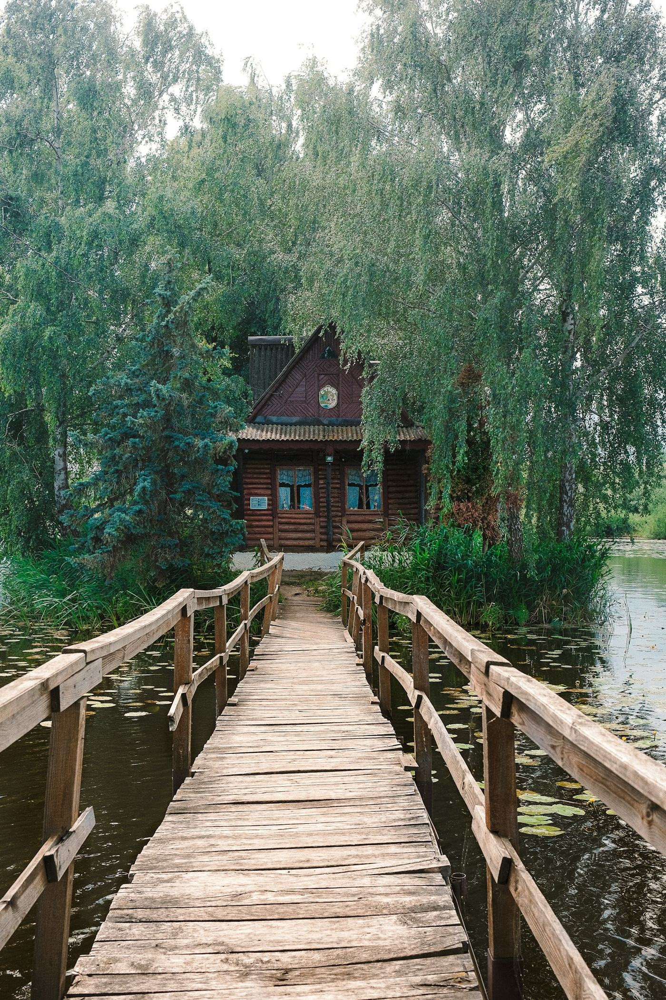
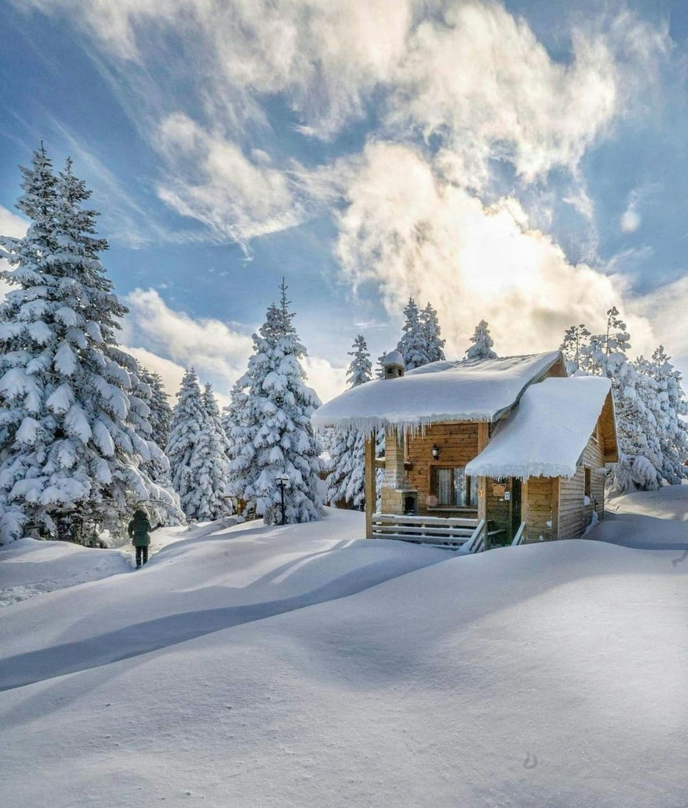

Huerkamp Home Group
Free guide
Shoreline, septic, wells, water quality and winter roads: what to check before you buy on the water.
Free guide for lake home and cabin buyers
Buying on a lake is different from buying in town. The shoreline, the water, the septic system and the road in all matter as much as the house, and each comes with its own rules.
This guide covers what our agents check on every lake property. See Twin Cities lake homes, Brainerd lakes and cabins for sale. Questions? Call or text us at (612) 502-7653.
Choosing the lake
Swimming, fishing, boating, quiet paddling or skiing each favor different lakes. Lake size, depth, bottom type and boat traffic matter more than the cabin's finishes.
The Minnesota DNR's LakeFinder has depth maps, fish surveys, water clarity and public accesses for thousands of lakes. Check for aquatic invasive species notes as well.
Walk down to the water. Is the bottom sandy or weedy? Is the shoreline steep? How much sun does it get? A great house on a weedy, north-facing bay may not be what you pictured.

Lakes rise and fall. Look at the FEMA flood map for the property and ask the seller about past high water. Your lender will require flood insurance if the home is in a high-risk flood zone.
Rules for the shoreline
Minnesota requires counties and cities to regulate building near lakes and rivers: setbacks from the water, limits on hard surfaces and rules on cutting trees and changing the shoreline. If you plan to add on, build a garage or add a beach, check the local rules before you buy.
Many docks and lifts don't need a permit if they meet DNR standards, but work below the lake's ordinary high water level, such as dredging or adding sand, often does. Ask the county and DNR before you plan changes.
If you plan to rent the cabin when you aren't using it, check the county, city or township rules first. Some require licenses or limit rentals.
Septic, well and systems
Most lake homes have a private septic system. Minnesota sellers must disclose what they know about it, and many counties require a compliance inspection when a property sells. A failing system can be expensive, so know its status before you commit.
Private wells aren't tested by anyone unless you do it. Test for bacteria and nitrate at a minimum; the Minnesota Department of Health also recommends testing for arsenic, and others depending on the area.
Some cabins are three-season. Check insulation, heat source, whether pipes are protected from freezing and whether the water system is drained in winter.
Is the road public and plowed, or private and maintained by an association? Who pays for plowing? Can emergency vehicles reach the home year-round?

Financing and owning
A cabin you use yourself can often be financed as a second home, which usually needs a larger down payment than a primary home. If you plan to rent it out, it may be treated as an investment property with different terms. Tell your lender your plans up front.
Get insurance quotes early: distance from a fire department, wood heat and flood risk can all affect the price and availability of coverage.
Docks and lifts going in and out each season, boat storage, lake association dues, propane, and shoreline maintenance add up. Ask the seller what they paid last year.
A cabin is usually taxed as a seasonal recreational property, not a homestead, and lakeshore is often valued highly. Look up the current taxes and ask the county about any recent value changes.
Ready when you are
Huerkamp Home Group has helped buyers and sellers across the Twin Cities since 2002, and has been a Dave Ramsey Endorsed Local Provider for more than 15 years.
Sources
Photos: Josh Hild (cover), Maksym Tymchyk and Jessica Anderson on Unsplash. General information, not legal, tax or lending advice. Rules and programs change; confirm details with your lender, title company, tax adviser or attorney. Huerkamp Home Group is a team of licensed REALTORS® with Keller Williams Preferred Realty. Equal Housing Opportunity.